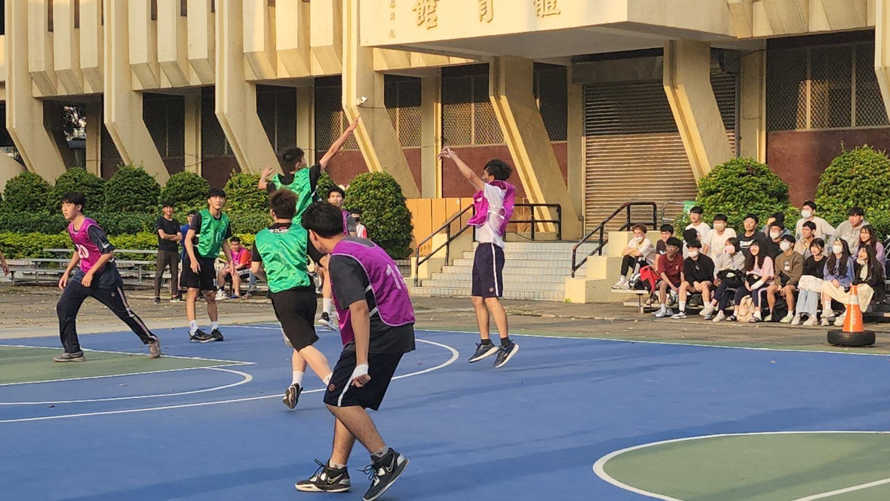

個人資訊
- 姓名: 林楷淯
- 學校: 中原大學
- 就讀科系: 資管系
- 生日: 2004年10月27日
- 星座: 天蠍座

興趣
- 程式設計
- 推理
- 運動
學歷
學校：中原大學 資管系(學生)
科系：資訊管理學系
在校期間：2023年9月~ 現在
個人特質
優點
企圖心、好勝
缺點
較無耐心、粗心
技能
個人經歷
大學一年級時，是修習電子工程，因此對邏輯方面更為擅長，之前電子系還有修許多實驗課，因此在動手做實體物品時，我也較有信心；除了當前資管系所必修的程式之外，我在電子系也學習過了C++程式語言，我對程式的興趣也由此而生。